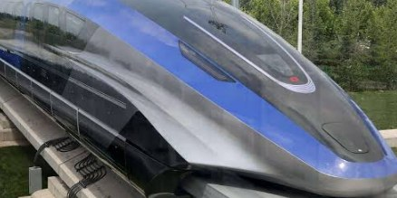
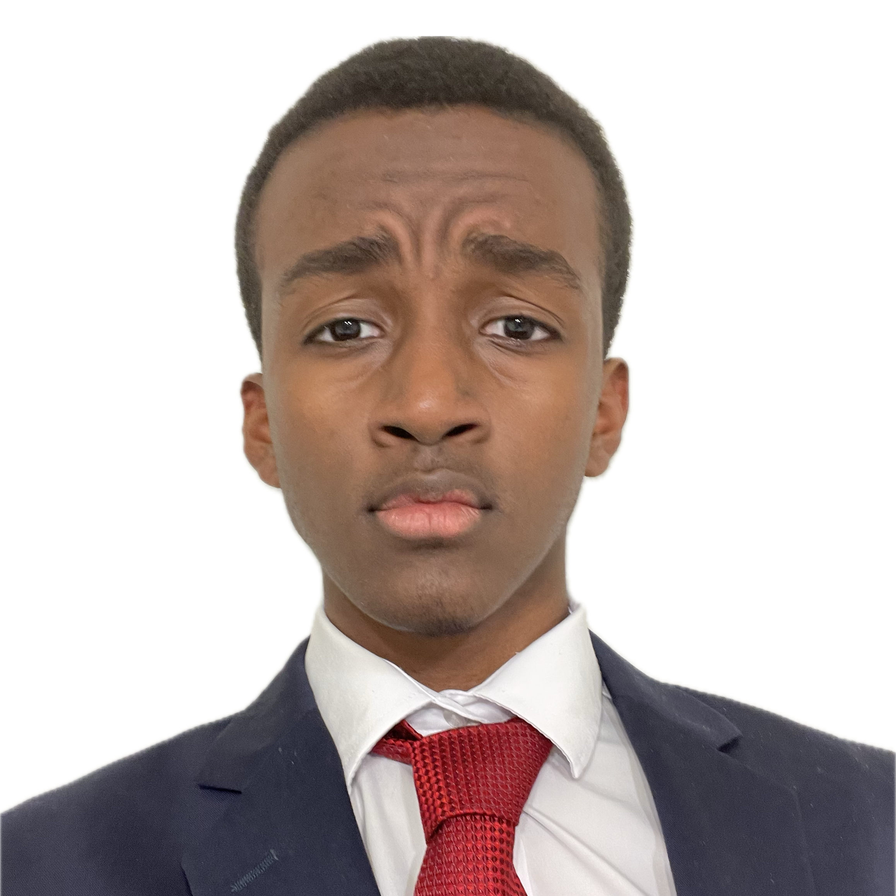
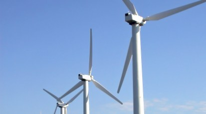
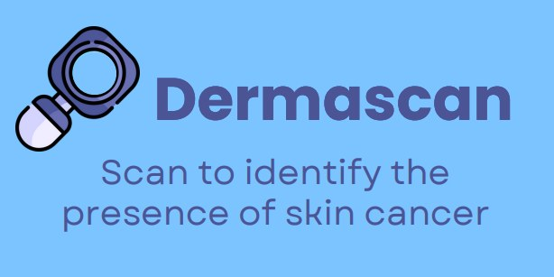

MATLAB Project
Maglev Levitation & Control
Modeled EDS maglev levitation with differential equations, then extended it in MATLAB with a linearized plant, Bode analysis, and a PID controller.
View projectAerospace Engineering, Texas A&M
I build and study systems grounded in applied math and hands-on engineering, from magnetic levitation prototypes to AI diagnostic models. NASA SEES research alum. Currently studying at Texas A&M University.

Projects

MATLAB Project
Modeled EDS maglev levitation with differential equations, then extended it in MATLAB with a linearized plant, Bode analysis, and a PID controller.
View project
SOLIDWORKS Project
Designed and modeled a magnetic-levitation wind turbine using active magnetic bearings, then built a working prototype. Top 48 finalist, Dallas Regional Science Fair.
View project
AI Data Analysis
Built a diagnostic model reaching 98.8% accuracy in skin cancer detection, integrated into a mobile app prototype. Qualified for the Texas State Science & Engineering Fair.
View projectAbout
I'm a first semester Aerospace Engineering student at Texas A&M University. Over a summer as a NASA SEES intern, I researched sustainable urban development using satellite and geospatial data, co-authored work accepted to the American Geophysical Union Fall Meeting, and presented findings to more than 100 NASA and UT Austin faculty.
Outside the classroom, I founded and lead a 30 member robotics and programming club and mentor debate delegates through YMCA Youth and Government. I graduated from Imagine International Academy of North Texas with a STEM Endorsement Diploma and a 4.629 weighted GPA.
Contact
Glad to talk about aerospace research, robotics, internship opportunities, or maglev trains. Reach out any time.